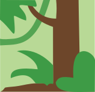

Kajman okularowy
Kajman okularowy
(Caiman crocodilus)
Najmniej zagrożony
Wielkość populacji na wolności: 4 000 000
Kajman okularowy (Caiman crocodilus) to średniej wielkości aligatorowaty zamieszkujący bagna, sawanny i lasy Ameryki Środkowej i Południowej. Może mieć barwę zieloną, brązową, żółtą lub szarą, a wzdłuż jego ogona i całego ciała można zaobserwować
pręgowane fragmenty. Swoją nazwę zawdzięcza występującemu między oczami kościstemu tworowi, który sprawia wrażenie, jakby nosił okulary. Ciało kajmana jest smukłe i ma wypukłe pasma łusek biegnące wzdłuż grzbietu. Średnia długość samców tego
gatunku to od 1,5 do 2 m (z wiekiem mogą urosnąć nawet do 2,5 m), a waga - od 13 do 40 kg. Samice są mniejsze. Ich długość to średnio od 1,08 do 1,4 m (maksymalnie 2 m w przypadku starszych i większych osobników), a waga - od 7 do 30 kg.
Kajmanowi
okularowemu nie grozi wyginięcie - należy do grona gatunków najmniej zagrożonych. Mimo że bywa celem polowań z uwagi na skórę, nie ma to wpływu na jego światową populację, a dzięki zdolnościom adaptacji i zakresowi występowania nie jest zagrożony
z powodu utraty siedlisk.
| Kontynenty | Regiony | Biomy |
|---|---|---|
| Ameryka Południowa | Kolumbia, Wenezuela, Gujana, Surinam, Gujana Francuska, Brazylia, Peru, Ekwador, Panama, Kostaryka, Nikaragua, Salwador, Honduras, Gwatemala, Belize, Meksyk |
 |

| Wielkość grupy (bez młodych osobników) | 1-6 (maks. 1 samiec, samice do 5) |
|---|---|
| Wielkość grupy kawalerskiej samców (bez młodych osobników) | 1-6 |
| Wielkość grupy kawalerskiej samic (bez młodych osobników) | 1-6 |
| Hierarchia dominacji | Samce chronią terytorium i zainteresowane samice przed rywalami |
| Strategia rozrodcza | Poligynia |
| Stosunek do człowieka | Ufność |
| Wielkość |
2,0 m długości 1,4 m długości
|
|---|---|
| Długość życia |
50 lat 50 lat
|
| Waga |
26,5 kg 18,5 kg
|
| Wiek dojrzałości płciowej | 6 lat |
|---|---|
| Wiek zakończenia okresu reprodukcyjnego | Śmierć |
| Liczba młodych przypadająca na okres godowy | 3-8 |
| Długość ciąży/inkubacji | 1 miesiąc |
| Okres międzyurodzeniowy | 24 mies. |
| Rozmnażanie w niewoli | Średnie |
Potrzeby społeczne
Kajmany okularowe prowadzą zwykle samotniczy tryb życia, ale mogą też żyć w luźno powiązanych grupach i tolerują inne osobniki, o ile mają dość przestrzeni. W okresie godowym samce są jednak agresywne wobec siebie.
Rozmnażanie
Sezon rozrodczy kajmanów okularowych ma miejsce w porze deszczowej w okresie od maja do sierpnia. Samce terytorialne pozwalają żyć samicom na ich terytorium, ale agresywnie odganiają inne samce. Potrafią ryczeć, aby przyciągnąć uwagę samic
i wzbudzić strach rywali. Jeśli samica znajdzie się na terytorium samca i jest gotowa do rozrodu, samiec przystępuje do rytuału godowego obejmującego pocieranie po plecach, wydawanie dźwięków, krążenie i puszczanie baniek. Chcąc doprowadzić
do kopulacji, samiec chwyta samicę i dąży do zbliżenia kloak.
Po kopulacji samica buduje na terytorium samca lęgowisko z błota i patyków szerokie na około metr i głębokie na 40 cm. Następnie składa od 14 do 40 jaj (zwykle jest ich
około 20). Legowisko jest przykrywane roślinnością, dzięki czemu możliwy jest rozwój młodych. W tym czasie samica - a w rzadkich przypadkach również samiec - zajmuje się ochroną jaj. Młode zaczynają się wykluwać po około 3 miesiącach.
Przyciągają uwagę matki, wydając wysokie dźwięki, dając jej sygnał do usunięcia roślinności z górnej części lęgowiska i udzielenia im pomocy. Młode przez pierwsze 18 miesięcy życia przebywają pod ochroną matki, jednak samodzielnie
zdobywają pokarm. Po tym okresie matka zaczyna być agresywna wobec swojego potomstwa, skłaniając je do odejścia i znalezienia swojego terytorium gdzieś indziej.
Kajmany okularowe osiągają dojrzałość płciową po 4-7 latach życia.
W przypadku samców następuje to zwykle wtedy, gdy osiągają długość 1,4 m, a w przypadku samic - 1,2 m. Szansa samców kajmana na połączenie się w parę rośnie, gdy stają się większe, dlatego mogą nie łączyć się w pary od razu po
osiągnięciu dojrzałości.
Ciekawostki
- W długich okresach suszy kajmany okularowe mogą zahibernować się w błocie aż do poprawy warunków otoczenia.
- W słabym świetle oczy kajmana okularowego odbijają się na czerwono.
- Gdy w Ameryce Południowej spadła liczba krokodyli, kajmany okularowe stały się celem polowań w celu zdobycia skór do produkcji, jednak ich skóra jest bardzo koścista i mniej pożądana na rynku komercyjnym.
- Kajmany okularowe pożywiają się głównie rybami, skorupiakami i mięczakami, ale w ich diecie znajduje się także materia roślinna.
- Na kajmany okularowe poluje niewiele drapieżników ze względu na ich rozmiar i rolę w ekosystemie. Ludzie, jaguary i inne dorosłe kajmany to jedyni drapieżnicy, którzy są w stanie zabić dorosłego kajmana okularowego.